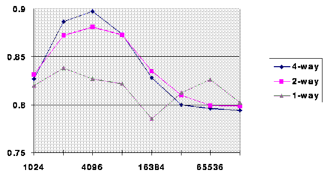
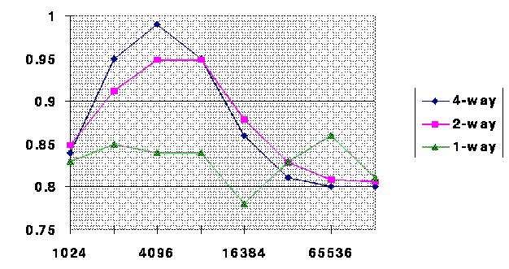
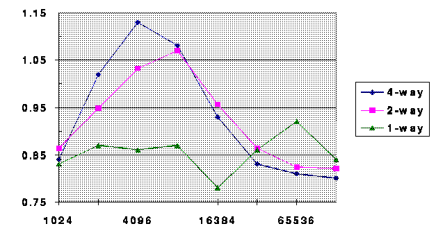

Assessing the Benefits of Active Messages
July 22, 1994
[This work was done with Bill Dally.]
Multithreading
- Allows processors to hide long, unpredictable latencies.
- Requires integrating incoming data with dependent computations.
- Can impair cache performance.
[Multithreading impairs cache performance if threads are executed in a
random order, bashing your data locality.]
Message-Driven Approach
- Hardware queue buffers incoming messages.
- When processor idle, service message, performing dependent computations.
Active Messages
- Messages get serviced immediately.
- Handlers store data locally and decrement counters, possibly putting
computation in software-managed queue.
- Related computations are scheduled together, for better cache performance.
[Active Messages
was created by Thorsten
von Eiken et al. at Berkeley.]
[The operating system arranges computations so that ones using the same
data run in a row.]
Comparison
Message-Driven vs. Active Messages
- Relies on buffers.
Does not use buffers.
- Seeks control locality.
Seeks data locality.
- Cooperative.
Preemptive.
- Long message handlers.
Short message handlers.
- Possibility of message queue overflow.
No possibility of queue overflow.
[Control/data locality: The message-driven approach branches (or falls through)
to the computation, lowering the instruction count, while Active Messages
works to improve cache performance.]
[Message handler length: In the message-driven approach, computation is
performed in the handlers, while in Active Messages, computation is
scheduled by the OS. A consequence of the longer messages in the
message-driven approach is that they can be better optimized (like larger
basic blocks), reducing the number of instructions and data accesses.]
Method
- Implement both systems on the J-Machine.
- Measure dynamic instruction counts.
- Simulate cache performance, for various cache configurations.
- Determine total execution time for each system.
[The message-driven approach has fewer instruction and data accesses.]
Results (miss = 12 cycles)

The graph shows the geometric mean of 6 benchmark programs. Hits take 1
cycles, misses 12 cycles, and there are separate instruction and data
caches of the specified sizes.
The message-driven approach is better for all configurations, taking 78-90%
of the time.
The reason the message-driven approach works so well with a direct-mapped
cache is that it does much better in the instruction cache, because it can
often fall through from receiving data to using it.
Results (miss = 24 cycles)

The message-driven approach is still better, although it's closer.
The reason the message-driven approach generally does best at the extremes
is that there the number of accesses dominates.
Results (miss = 48 cycles)

When misses take 48 cycles, the results are mixed, with Active Messages
sometimes achieving better results, although the message-driven approach is
still best for direct-mapped caches.
Discussion
- Message-driven is better for small caches and large caches, where the
number of accesses dominates.
- Active messages is better for medium-sized set-associative caches
with high miss penalties.
- Active Messages is not always worth the overhead.